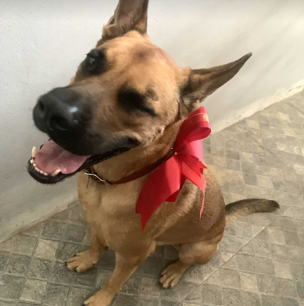
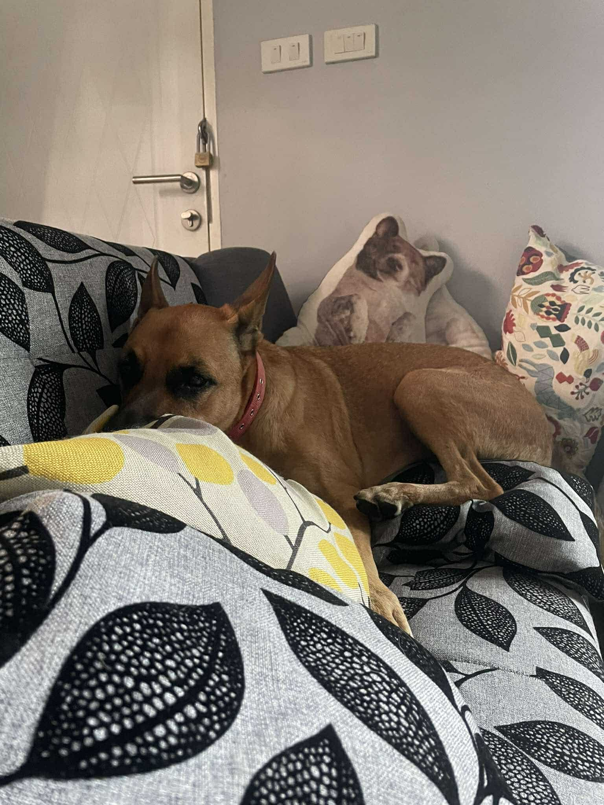
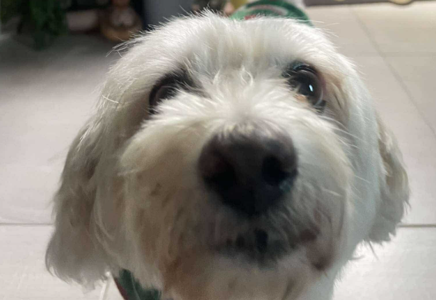
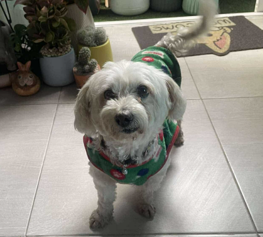
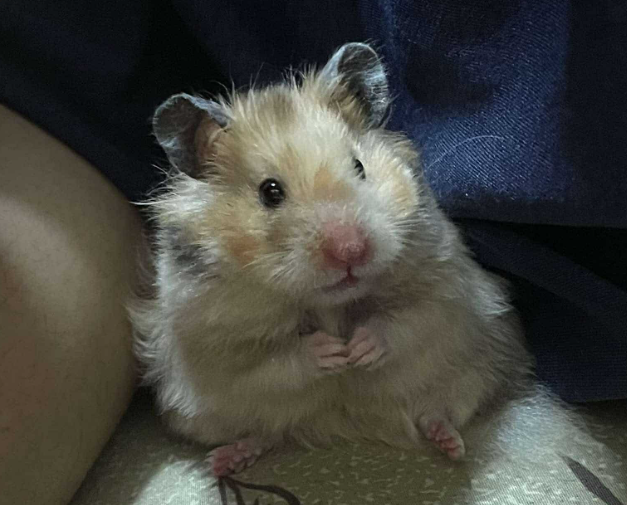

My Dog aka Chok
 Meet Chok, my energetic and lovable 7-year-old male police dog. Despite his intimidating appearance, Chok has a playful and spirited personality. He’s full of energy and absolutely loves exercising, whether it’s running, jumping, or playing fetch. His lively nature makes every day exciting, and his adorable behavior never fails to warm my heart. Don’t let his tough look fool you—Chok is as sweet as they come!
My Dog aka Iu
 Let me introduce Iew, my sweet and affectionate 9-year-old female poodle. She has a charming personality and loves to cuddle, always staying close to me no matter where I go. Iew adores going for walks and exploring the outdoors, which brings her so much joy. Her loving nature and playful spirit make her the perfect companion and a truly cherished part of my life.
My Hamster aka Maru
Meet Maru, my adorable 4-month-old giant hamster. Maru is an incredibly sweet and gentle little one who has never shown any signs of aggression. Perhaps it’s because Maru is naturally timid, but this only adds to his charm. Watching him explore his surroundings with cautious curiosity always brings a smile to my face. He’s truly a lovable companion!